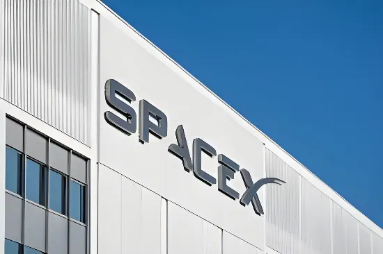

SpaceX entre en Bourse : la plus grande IPO de l'histoire du capitalisme américain
Le 20 mai 2026, SpaceX dépose son prospectus S-1 auprès de la SEC et annonce son introduction en Bourse sur le Nasdaq sous le symbole SPCX, avec une cotation ciblée autour du 12 juin 2026. Valorisée entre 1 750 et 2 000 milliards de dollars, la société d'Elon Musk vise à lever jusqu'à 75 milliards de dollars — un montant qui ferait de cette IPO la plus grande de toute l'histoire financière mondiale, devant Saudi Aramco. Mais derrière la trajectoire spectaculaire d'une entreprise spatiale devenue empire technologique multi-secteurs — fusées réutilisables, internet satellitaire Starlink, intelligence artificielle xAI, semi-conducteurs — se cache une réalité comptable troublante : des pertes cumulées de plus de 37 milliards de dollars et 4,28 milliards perdus au seul premier trimestre 2026.
potentiellement portée à 2 000 Md$
record historique absolu
+33 % sur un an
T1 2026
Fondée en 2002 par Elon Musk avec 100 millions de dollars issus de la vente de PayPal, SpaceX naît d'une ambition aussi claire que démesurée : rendre les fusées réutilisables pour coloniser Mars. Les trois premiers lancements sont des échecs. Au quatrième essai, en 2008, alors que Musk admet n'avoir plus de fonds pour une nouvelle tentative, la fusée Falcon 1 atteint l'orbite. Ce succès ouvre la voie à une décennie de domination absolue du marché des lancements commerciaux : en 2025, SpaceX réalise 132 lancements orbitaux, soit davantage que tous les autres opérateurs mondiaux réunis.
Le tournant stratégique décisif est l'émergence de Starlink, réseau de satellites en orbite basse offrant un accès internet mondial. En 2025, Starlink génère 11,4 milliards de dollars de revenus — soit 61 % du chiffre d'affaires total du groupe — et compte près de 9 millions d'abonnés. C'est cette activité, unique source de profit réel du groupe, qui justifie l'essentiel de la valorisation envisagée à l'IPO. Le réseau satellitaire, déployé massivement depuis 2019, dessert aussi bien des particuliers éloignés des réseaux terrestres que des gouvernements et des forces armées — les contrats de défense représentant une part croissante du portefeuille.

En février 2026, SpaceX réalise ce que Bloomberg qualifie de plus grande combinaison d'entreprises privées de l'histoire : elle absorbe xAI, la startup d'intelligence artificielle d'Elon Musk, dans un échange d'actions, structurant xAI comme filiale à part entière. La valorisation combinée de l'entité fusionnée est estimée à 1 250 milliards de dollars au moment de l'opération. xAI avait elle-même absorbé le réseau social X (anciennement Twitter) en mars 2025.
Cette fusion transforme radicalement le profil de l'entreprise qui se présente en Bourse. Le S-1 déposé en mai 2026 agrège trois activités aux profils financiers très distincts : les lancements de fusées (5 à 6 milliards de revenus), Starlink (11,4 milliards), et l'ensemble xAI-X. Si cette dernière division génère des revenus d'abonnements en hausse, elle est aussi la source principale des pertes du groupe — l'intelligence artificielle absorbe à elle seule l'équivalent de 2,5 milliards de dollars par trimestre. En mars 2026, SpaceX annonce également Terafab, un projet commun avec Tesla et xAI pour la fabrication de semi-conducteurs dédiés aux applications spatiales et à l'IA.
Ce qui frappe à la lecture du S-1 est la tension entre deux réalités comptables. D'un côté, une croissance des revenus exceptionnelle : 18,7 milliards de dollars en 2025, soit une hausse de 33 % sur un an et de 80 % en trois ans. De l'autre, des pertes qui s'accumulent : 4,9 milliards de dollars de perte nette en 2025, 4,28 milliards au seul premier trimestre 2026, et un déficit cumulé depuis la fondation dépassant les 37 milliards de dollars. La valorisation cible de 1 750 milliards de dollars représente donc environ 110 fois les revenus annuels — un multiple qui dépasse largement celui de Nvidia (35 fois) et suppose que les investisseurs paient aujourd'hui pour des décennies de croissance future.
L'écart entre la performance ajustée (6,6 milliards d'EBITDA positif en 2025, selon The Information) et la perte comptable nette s'explique par la structure de financement : compensation en actions massives, amortissements de la constellation satellitaire et investissements colossaux dans l'infrastructure IA. En 2025, 60 % des 20 milliards de dépenses d'investissement du groupe ont été absorbés par la division IA. SpaceX achète du temps — et demande au marché de le financer.

Elon Musk fonde Space Exploration Technologies Corp. (SpaceX) avec 100 millions de dollars issus de la vente de PayPal, avec l'objectif explicite de rendre l'humanité multiplanétaire.
Après trois échecs consécutifs, le quatrième lancement du Falcon 1 réussit. SpaceX devient la première entreprise privée à placer un satellite en orbite. Quelques semaines plus tard, la NASA lui attribue un contrat de ravitaillement de l'ISS.
SpaceX maîtrise l'atterrissage et la réutilisation des premiers étages de fusée avec le Falcon 9. En 2019, elle commence le déploiement de Starlink, sa constellation de satellites en orbite basse. Le Falcon 9 devient le lanceur commercial le plus utilisé au monde.
Elon Musk confirme publiquement que SpaceX vise une introduction en Bourse en 2026. Une vente secondaire d'actions valorise alors la société à 800 milliards de dollars — en faisant déjà la plus grande entreprise privée au monde.
SpaceX absorbe xAI, la startup d'IA de Musk, dans un échange d'actions. L'entité combinée est valorisée à 1 250 milliards de dollars. xAI avait elle-même intégré le réseau social X (ex-Twitter) en mars 2025.
SpaceX annonce le projet Terafab, une joint-venture avec Tesla et xAI pour la fabrication de semi-conducteurs dédiés à l'IA et aux applications spatiales — un nouveau pôle de croissance intégré au dossier d'IPO.
SpaceX dépose son S-1 public auprès de la SEC. La cotation sur le Nasdaq sous le symbole SPCX est ciblée autour du 12 juin 2026, avec une fourchette de valorisation entre 1 750 et 2 000 milliards de dollars. Goldman Sachs pilote le syndicat de 21 banques.
L'introduction en Bourse de SpaceX est un révélateur de l'état du capitalisme américain en 2026. Jamais une entreprise n'avait été valorisée à ce niveau avant même de démontrer une rentabilité nette durable. Le modèle repose entièrement sur la croyance que des marchés qui n'existent pas encore — centres de données orbitaux, tourisme lunaire, exploitation de l'espace profond — justifient des multiples de valorisation sans précédent. Pour l'Europe et le reste du monde, le signal est brutal : avec 75 milliards levés en quelques semaines, SpaceX disposera d'un trésor de guerre sans équivalent pour écraser ses concurrents par les prix, accélérer Starship et financer l'ambition martienne de Musk. Arianespace, qui n'a réalisé que 4 à 5 lancements en 2025 contre 132 pour SpaceX, mesure déjà l'ampleur de l'écart. L'IPO ne marque pas seulement l'entrée en Bourse d'une entreprise : elle consacre la privatisation définitive de la conquête spatiale.
SpaceX Goes Public: The Largest IPO in the History of American Capitalism
On May 20, 2026, SpaceX filed its S-1 prospectus with the SEC and announced its intention to list on the Nasdaq under the ticker SPCX, with a target debut around June 12, 2026. Valued at between $1.75 trillion and $2 trillion, Elon Musk's company is seeking to raise up to $75 billion — a figure that would make this the largest initial public offering in global financial history, surpassing Saudi Aramco. Behind the spectacular trajectory of a space company turned multi-sector technology empire — reusable rockets, Starlink satellite internet, xAI artificial intelligence, semiconductors — lies a troubling accounting reality: cumulative losses exceeding $37 billion and a $4.28 billion net loss in the first quarter of 2026 alone.
potentially reaching $2 trillion
an absolute historical record
+33% year-on-year
Q1 2026 alone
Founded in 2002 by Elon Musk with $100 million from the sale of PayPal, SpaceX was born with an ambition as clear as it was outsized: make rockets reusable and colonize Mars. The first three launches failed. On the fourth attempt in 2008, with Musk admitting he had no funds for another try, the Falcon 1 reached orbit. That success opened the door to a decade of absolute dominance in the commercial launch market: in 2025, SpaceX conducted 132 orbital launches — more than all other global operators combined.
The decisive strategic pivot was Starlink, a low-orbit satellite network providing global internet access. In 2025, Starlink generated $11.4 billion in revenue — 61% of the group's total — and counted nearly 9 million subscribers. This business, the group's only genuinely profitable division, underpins the bulk of the IPO's proposed valuation. Deployed at scale since 2019, the network serves both individuals in remote areas and governments and armed forces, with defense contracts making up a growing share of the portfolio.
In February 2026, SpaceX completed what Bloomberg called the largest private corporate combination in history: it absorbed Elon Musk's artificial intelligence startup xAI in an all-stock deal, structuring xAI as a wholly owned subsidiary. The combined valuation at the time of the deal was reported at approximately $1.25 trillion. xAI had itself absorbed the social network X (formerly Twitter) in March 2025.
This merger fundamentally transformed the profile of the company going public. The S-1 filed in May 2026 aggregates three businesses with very different financial profiles: rocket launches ($5–6 billion in revenue), Starlink ($11.4 billion), and the xAI-X division. While the latter is growing subscription revenue, it is also the group's primary source of losses — AI alone absorbs the equivalent of $2.5 billion per quarter. In March 2026, SpaceX also announced Terafab, a joint venture with Tesla and xAI to manufacture semiconductors for space and AI applications.
What strikes in reading the S-1 is the tension between two accounting realities. On one side, exceptional revenue growth: $18.7 billion in 2025, a 33% year-on-year increase and 80% growth over three years. On the other, mounting losses: $4.9 billion net loss in 2025, $4.28 billion in the first quarter of 2026 alone, and a cumulative deficit since founding exceeding $37 billion. The target valuation of $1.75 trillion represents roughly 110 times annual revenue — a multiple that far exceeds Nvidia's (35 times) and assumes investors are paying today for decades of future growth.
The gap between adjusted performance (positive EBITDA of $6.6 billion in 2025, per The Information) and reported net loss is explained by the financing structure: massive stock-based compensation, depreciation of the satellite constellation, and colossal AI infrastructure investment. In 2025, 60% of the group's $20 billion in capital expenditure was absorbed by the AI division. SpaceX is buying time — and asking the market to fund it.
Elon Musk founds Space Exploration Technologies Corp. (SpaceX) with $100 million from the PayPal sale, with the explicit goal of making humanity multiplanetary.
After three consecutive failures, the fourth Falcon 1 launch succeeds. SpaceX becomes the first private company to place a satellite in orbit. Weeks later, NASA awards it an ISS resupply contract.
SpaceX masters Falcon 9 booster landing and reuse. In 2019, it begins deploying Starlink, its low-Earth-orbit satellite constellation. The Falcon 9 becomes the world's most-used commercial launcher.
Elon Musk publicly confirms SpaceX will pursue a 2026 IPO. A secondary share sale at the time values the company at $800 billion — already the world's most valuable private company.
SpaceX absorbs xAI in an all-stock deal, creating a combined entity valued at $1.25 trillion. xAI had itself integrated the social network X (formerly Twitter) in March 2025.
SpaceX announces Terafab, a joint venture with Tesla and xAI to manufacture semiconductors for AI and space applications — a new growth pillar incorporated into the IPO filing.
SpaceX files its public S-1 with the SEC. The Nasdaq listing under the ticker SPCX is targeted around June 12, 2026, at a valuation of $1.75 to $2 trillion. Goldman Sachs leads a syndicate of 21 banks.
SpaceX's IPO reveals the state of American capitalism in 2026. Never before had a company been valued at this scale before demonstrating sustained net profitability. The model rests entirely on the belief that markets that do not yet exist — orbital data centers, lunar tourism, deep-space resource extraction — justify unprecedented valuation multiples. For Europe and the rest of the world, the signal is stark: with $75 billion raised in weeks, SpaceX will hold a war chest with no equivalent, enabling it to undercut competitors on price, accelerate Starship, and fund Musk's Martian ambitions. Arianespace, which conducted just 4 to 5 launches in 2025 compared to SpaceX's 132, already measures the scale of the gap. This IPO does not merely mark a company's stock market debut: it consecrates the definitive privatization of the conquest of space.